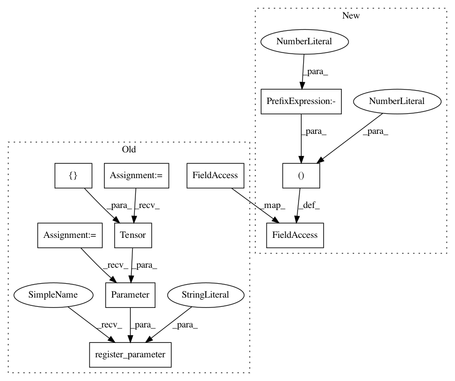

b61a525baee25d2ea31ab088540dd4d2ffed2251,test/examples/spectral_mixture_gp_regression_test.py,SpectralMixtureGPModel,__init__,#SpectralMixtureGPModel#,22
Before Change
class SpectralMixtureGPModel(gpytorch.GPModel):
def __init__(self):
super(SpectralMixtureGPModel, self).__init__(GaussianLikelihood())
self.mean_module = ConstantMean()
self.covar_module = SpectralMixtureKernel()
self.register_parameter("log_noise", nn.Parameter(torch.Tensor([-2])), bounds=(-5, 5))
self.register_parameter("log_mixture_weights", nn.Parameter(torch.zeros(3)), bounds=(-5, 5))
self.register_parameter("log_mixture_means", nn.Parameter(torch.zeros(3)), bounds=(-5, 5))
self.register_parameter("log_mixture_scales", nn.Parameter(torch.zeros(3)), bounds=(-5, 5))
After Change
def __init__(self):
likelihood = GaussianLikelihood(log_noise_bounds=(-5, 5))
super(SpectralMixtureGPModel, self).__init__(likelihood)
self.mean_module = ConstantMean(constant_bounds=(-1, 1))
self.covar_module = SpectralMixtureKernel(
n_mixtures=3,
log_mixture_weight_bounds=(-5, 5),
In pattern: SUPERPATTERN
Frequency: 3
Non-data size: 10
Instances
Project Name: cornellius-gp/gpytorch
Commit Name: b61a525baee25d2ea31ab088540dd4d2ffed2251
Time: 2017-08-15
Author: gpleiss@gmail.com
File Name: test/examples/spectral_mixture_gp_regression_test.py
Class Name: SpectralMixtureGPModel
Method Name: __init__
Project Name: cornellius-gp/gpytorch
Commit Name: b61a525baee25d2ea31ab088540dd4d2ffed2251
Time: 2017-08-15
Author: gpleiss@gmail.com
File Name: test/lazy/toeplitz_lazy_variable_test.py
Class Name: Model
Method Name: __init__
Project Name: cornellius-gp/gpytorch
Commit Name: b61a525baee25d2ea31ab088540dd4d2ffed2251
Time: 2017-08-15
Author: gpleiss@gmail.com
File Name: test/examples/simple_gp_regression_test.py
Class Name: ExactGPModel
Method Name: __init__